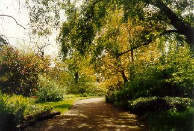
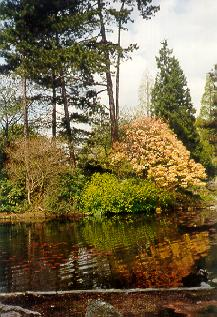

| В╕дбуло, в╕дгyло, промайнуло
Л╕то красне╓, радост╕ мить, Й намага╓ться в╕тер понуро Краплями дощику спогади змить. Л╕то, до самого неба дорога
|
 |
| А пам`ята╓ш, як сонячний зайчик
См╕шно навколо ставку вигляда Зна╓ веселий ненацький зухвальчик, Що н╕ хмаринки ╕ близько нема. А як сонце багряне с╕дало,
|
 |